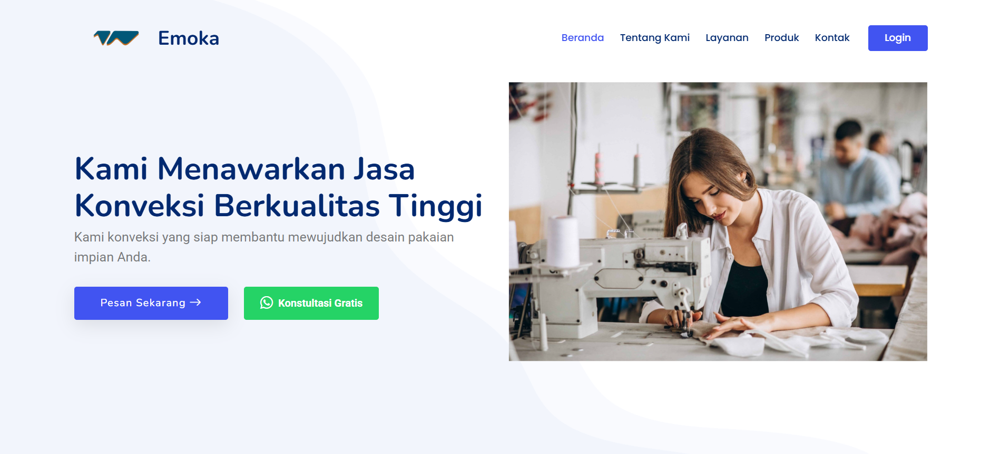

April - Agustus 2025
Sistem Informasi Pemesanan Konveksi
Laravel
MySQL
Bootstrap
JavaScript
Mengembangkan sistem informasi pemesanan konveksi untuk membantu pengelolaan data pesanan dan meningkatkan efisiensi proses administrasi. Mengimplementasikan fitur pengelolaan pesanan, pembayaran, dan dokumentasi sistem.